代入上式，我们得
代入上式，我们得继续上一节中所进行的类比，我们就会预期，对应于其变化率为作用力的机械动量p=mv，就会有一个等于LI的类似量，其变化率为V。当然，我们并没有任何权利讲LI就是电路的真实动量，事实上，它并不是。整个电路可能固定不动而没有任何动量。LI与动量mv相类似只是在彼此都满足相对应的方程这一意义上说的。同样，对于动能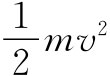 ，也有一类似量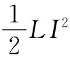 与之对应。但这里却使我们感到惊异，这 在电的情况下的确就是能量。这是因为对电感做功的时间变化率为VI，而它在力学系统中相应的量为Fv。因此，就能量来说，这些量不但在数学上彼此对应，而且也具有相同的物理意义。
从下面所述情况我们可更详尽地明了这一点。就像在式（17.16）中我们曾经求得的那样，由感应力所做的电功其时间变化率为电动势与电流之积：
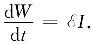
将式（17.34）中用电流表示的
代入上式，我们得
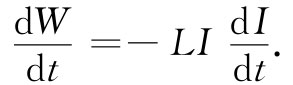 （17.36）
对这一方程进行积分，则就求得在建立电流过程中为了克服自感电动势而需要从外部电源获得的能量 [4] （这必定等于所储存的能量U）为
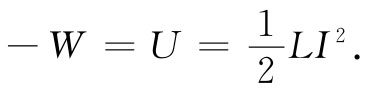 （17.37）
因此，储藏于自感中的能量为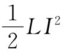 。
把与此相同的论据应用于诸如图17-8或17-9中的那一对线圈，就可以证明该系统的总电能由下式给出：
为此，设开始时两线圈中的I=0，然后可以先在线圈1中接通电流I1 ，让线圈2中的电流I2 =0。此时所做的功正好为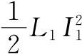 。但现在当接通I2 时，就不仅在电路2中对抗电动势做功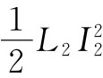 ，而且也做了附加的功MI1 I2 ，后者等于电路1中电动势［M（dI2 /dt）］的时间积分，再乘以该电路中当时的恒定 电流I1 。
假设现在希望求出分别带有电流I1 和I2 的任意两个线圈之间的作用力。首先我们也许预期，可以应用虚功原理通过取式（17.38）中的能量变化而求得。当然，还必须记住，当我们改变两线圈的相对位置时，唯一变化的量是互感M。这样，我们也许会把虚功原理方程写成：
-FΔx=ΔU=I1 I2 ΔM（错了）.
但这个式子却是错误的。因为，正如我们以前曾经见过的，它只包括两线圈中的能量变化，而没有包括为使电流I1 和I2 保持恒定值的那些电源的能量变化。现在我们能够理解这些电源必须在线圈移动时供应能量以便抵抗线圈中的感生电动势。如果想要正确地应用虚功原理，就必须把这些能量也包括进去。然而，正如我们曾经见到的，可以取一捷径，通过回忆知道总能量等于所谓的“机械能”U机械 的负值后，再应用虚功原理。因此，我们可以把力写成：
-FΔx=ΔU机械 =-ΔU. （17.39）
于是两线圈间之力由下式给出：
FΔx=I1 I2 ΔM.
关于两线圈系统的能量表示式（17.38），可以用来证明两线圈间的互感M与自感L1 和L2 之间存在一个有趣的不等式。十分清楚，两线圈的能量必须总是正的。如果把两线圈的电流从零开始增加到某个值，则我们就已经在给该系统输入能量了。要不然的话，电流便会自发增加而同时又对世界其他部分释放能量——一件不可能会发生的事情！现在，我们的能量表示式（17.38）也同样可以写成如下形式：
这只是一个代数变换。这个量对于I1 和I2 的任何值都必须始终为正。特别是即使I2 恰巧为特殊值
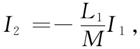 （17.41）
它仍必须为正。但对于I2 这个电流，式（17.40）中的首项为零。如果能量一定是正值，则式（17.40）的末项就必须大于零。因而要求有
L1 L2 ＞M2 .
这样，我们就已证明了这个普遍结果：任意两个线圈互感M的大小必然小于或等于两个自感的几何平均值（M本身是可正可负的，这取决于对电流I1 和I2 的符号约定）。
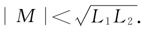 （17.42）
M与自感的关系常被写成
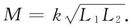 （17.43）
常数k称为耦合系数。如果来自一个线圈的通量大部分贯穿另一个线圈，则该耦合系数很接近于1，我们说该两线圈是“紧耦合”的。如果两线圈相距很远，或由另外的安排使得其互相贯串的通量很少，则耦合系数接近于零，而互感便很小了。
为计算两线圈的互感，我们在式（17.30）中已给出了一个环绕两电路的双重线积分公式。或许我们认为，可以利用相同的公式通过环绕同一个线圈进行两次线积分而获得单个线圈的自感。然而，这办法行不通，因为在环绕两个线圈积分时，若两线圈都落在同一点，则被积函数中的分母r12 将会趋于零，于是从这个式所得到的自感就会无限大。原因在于这个公式是一种近似，只有当两电路的导线截面比从一个电路至另一个电路的距离小时这个公式才适用。很清楚，这样一种近似对于单个线圈并不成立。事实上，单个线圈的自感，当其中导线的直径变得越来越小时，真的会按照对数函数方式趋于无限大。
这样，我们就必须寻找计算单个线圈自感的另一种方法。有必要将导线里的电流分布也计算在内，因为导线的大小是一个重要参数。因此，我们不应去追究一个“电路”的自感如何，而应去寻求导体分布 的自感如何。或许求出自感最方便的办法是利用磁能。以前我们在§15-3中曾求出过关于恒定电流分布的磁能表示式：
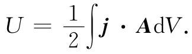 （17.44）
如果已知电流密度j的分布，则可以算出矢势A，并进一步算出式（17.44）的积分而获得能量。这个能量等于自感的磁能，即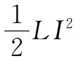 。令两者相等我们就给出了关于自感的公式：
当然，我们期望，自感是只与该电路的几何形状有关而与电路中的电流I无关的一个数值。式（17.45）的确会给出这样的结果，因为这个式中的积分与电流的平方成正比，电流通过j出现一次，通过矢势A又出现一次。这积分除以I2 后将与电路的几何形状有关而与电流I无关了。
关于电流分布的能量表示式（17.44），可以写成一个十分不同的形式，后者有时更便于计算，并且，正如我们以后将见到的，它是一种重要形式，因为它的正确性更普遍。在关于能量的公式（17.44）中，A和j两者都可以联系到B，因而可以指望用磁场来表示这能量——就像过去我们能够把静电能同电场联系起来那样。我们通过用∈0 c2 ▽×B代替j开始，但不能那么容易地代替A，因为B=▽×A，所以并不能倒过来用B给出A。但无论如何，我们总可以写出
有趣的是，附带一些限制条件，这个积分可以写成
为看清这一点，我们将其中一个典型项详细写出。假定我们处理式（17.46）积分中所含的项（▽×B）z Az 。将其各部分写出，便得
（当然，还有两个相同类型的积分）。现在就第一项对x进行积分——采用分部积分法，这就是说，我们可以有
现在假定我们的系统——指各源及各场——是有限的，因而在无限远处所有的场都趋于零。这样，若那些积分都是对全部空间进行的，则在积分限处项By Az 的值将为零。剩下的就只有By （∂Az /∂x）那一项，这显然是By （▽×A）y 的一部分，因而也就是B·（▽×A）的一部分。如果你又算出其余五项，就将看到式（17.47）的确与式（17.46）等效。
但现在我们可用B来代替▽×A，从而获得
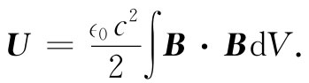 （17.48）
上式已经把一静磁情况的能量仅用磁场来表示，这一表示式紧密地对应于我们曾经得到的静电能公式：
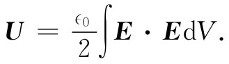 （17.49）
之所以强调这两个能量公式，其中的一个原因是，有时它们更便于应用。而更为重要的是，事实证明，对于动态场（当E和B都随时间变化时）这两个表示式（17.48）和（17.49）都保持正确，而以往关于电能和磁能所曾给出的其他公式则不再正确——它们仅适用于静态场。
如果对单个线圈的磁场已经了解，则可以通过使能量表示式（17.48）等于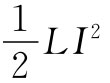 而求出自感。让我们通过求出长螺线管的自感来看看这是如何计算出来的。以前就知道长螺线管里的磁场是均匀的而管外的B为零。管内磁场的大小为B=nI/（∈0 c2 ），其中n为单位长度的绕线匝数，而I为电流。如果该线圈的半径为r而其长度为l（我们设想l很长，也即l≫r，从而可以忽略边缘效应），则管内的体积为πr2 l。因而磁能为
[1] 现在由于字母A已被用于矢势了，我们建议用S来表示表面积。
[2] 式（17.31）和（17.32）中M12 和M21 的符号取决于对该两线圈中正电流向指的任意选择。
[3] 附带说一下，这并不是 在力学量与电学量之间能够建立起对应关系的唯一 途径。
[4] 目前我们忽略电流在线圈的电阻中发热而引起的任何能量损耗。这种损耗需要来自电源的附加能量，但不会改变输入电感中的能量。